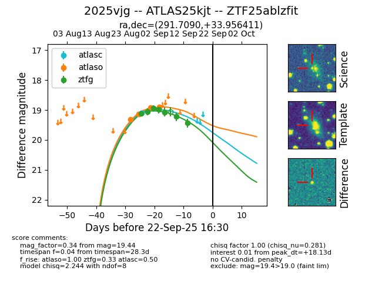
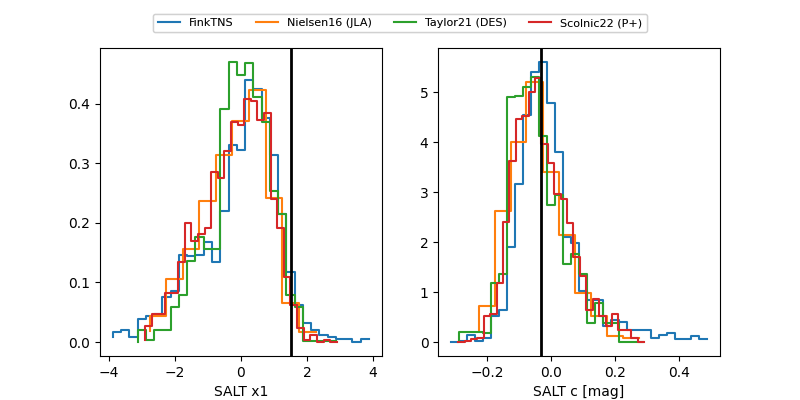

FINK: ZTF25ablzfit
Lasair: ZTF25ablzfit
ALeRCE: ZTF25ablzfit
TNS: 2025vjg
YSE: 2025vjg
ZTF25ablzfit (ztf,fink)
2025vjg (tns,yse)
ATLAS25kjt (atlas)
equatorial (ra, dec) = (291.7090,+33.95641)
galactic (l, b) = (67.0509,+8.11315)


last atlasc=19.10, atlaso=18.90, ztfg=19.44
1 atlasc, 4 atlaso, 7 ztfg detections